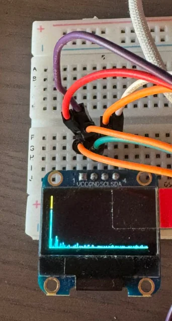
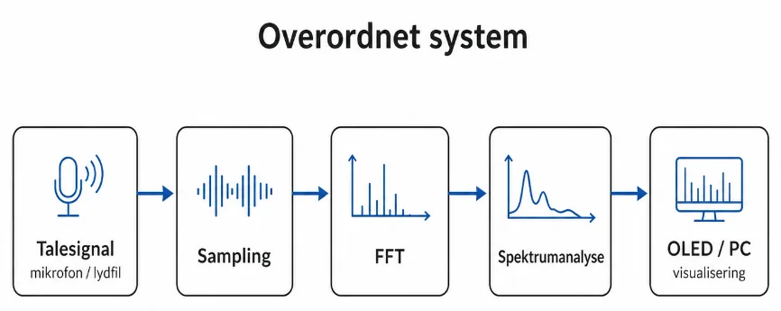
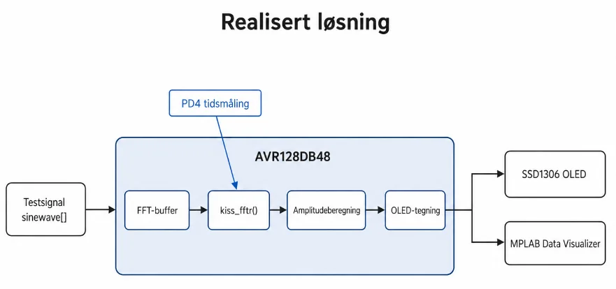
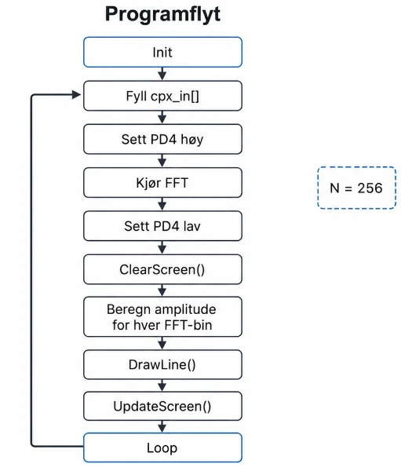

DP12 Articulation trainer
Spectrum analyzer on the AVR128DB48: 256-point FFT with kissFFT, display of the spectrum on an OLED and measurement of run time.
Status
- FFT computation, display on the OLED and run-time measurement work.
- Integration with a pre-recorded audio file was not completed, and the report says so clearly.
- Further work: convert the audio file to PCM, better scaling of the spectrum and real-time sampling from the ADC.
Figures







